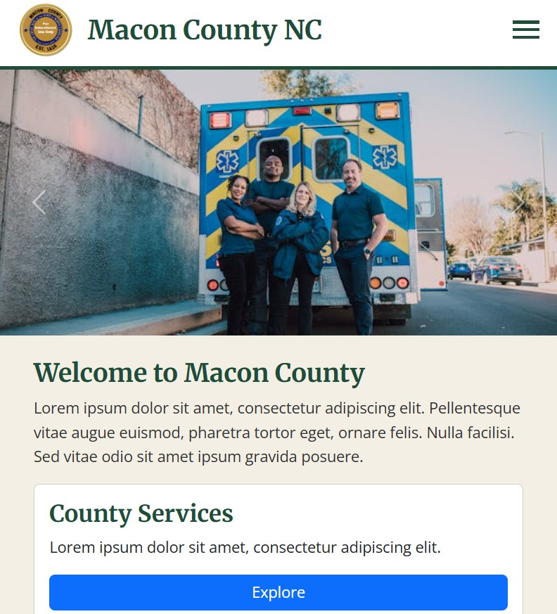
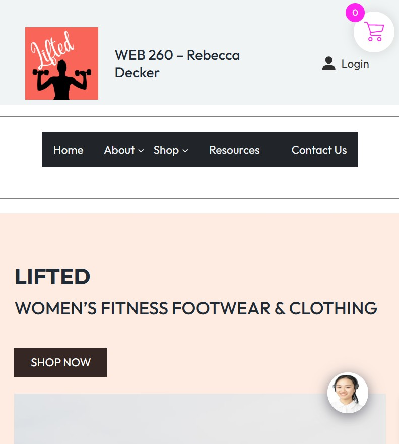
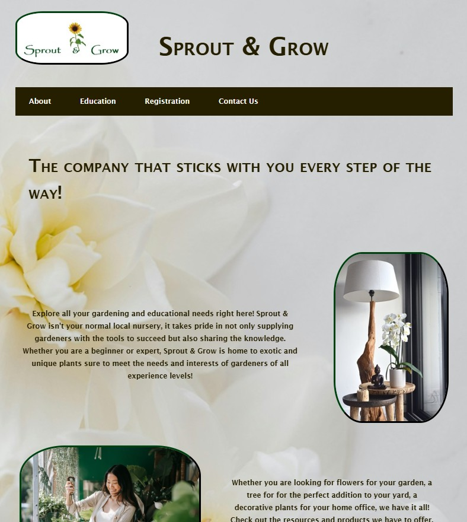
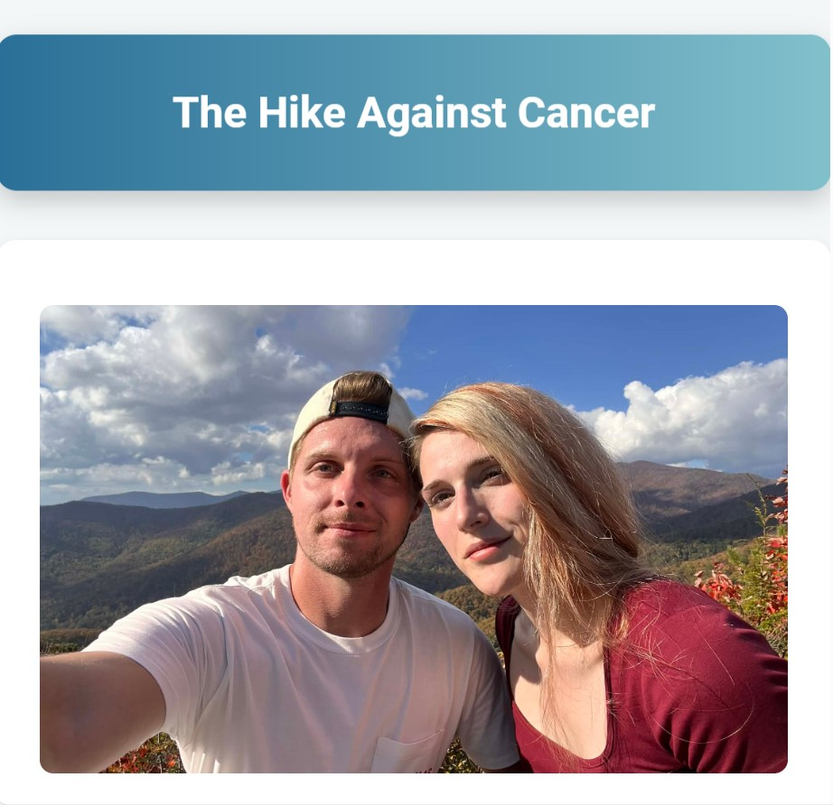
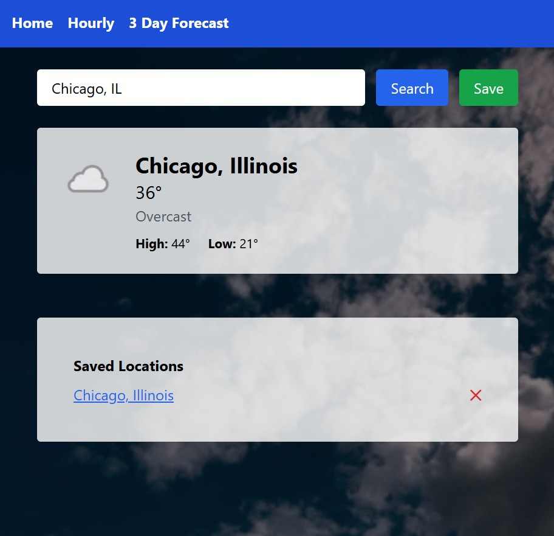

My Projects
A selection of projects that showcase my skills in full stack web development, interactivity, accessibility, and responsive design.

Macon County Website Redesign
Demonstrates responsive layout and JavaScript interactivity.

Lifted WordPress Website
Focuses on clean UI design and accessibility best practices.

Sprout and Grow Website
Highlights backend logic and database integration.

Hike For Cancer Event Signup Website
Showcases advanced CSS styling and animations.

Weather Forecast Application
Represents growth and problem-solving across the stack.